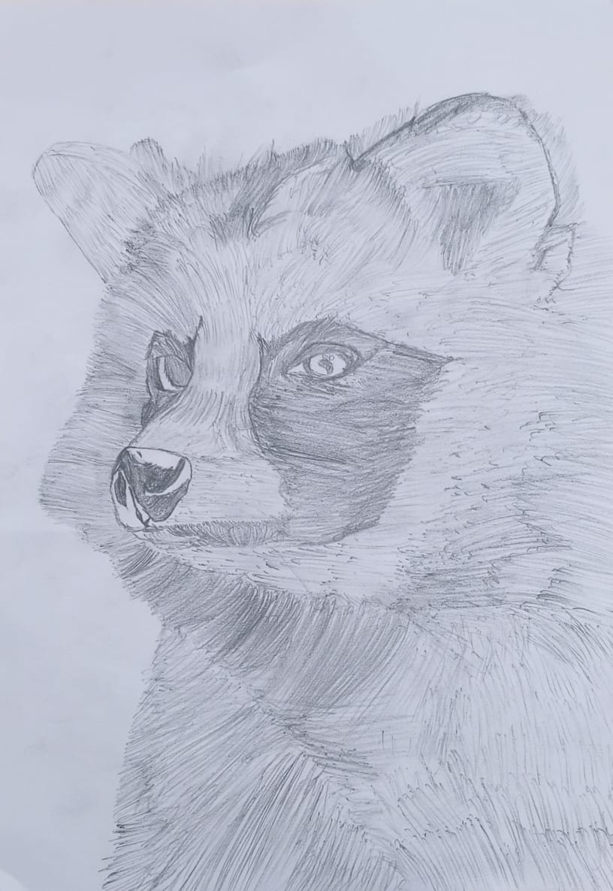

🎨 Featured Drawings

🦝 Tanuki – A creature from Japanese folklore. Sketched with HB/2B pencils.

👫 Couple Face – Emotion-focused realism with soft shading techniques.

🐯 Animal Face – Wild expression captured with sharp pencil strokes.